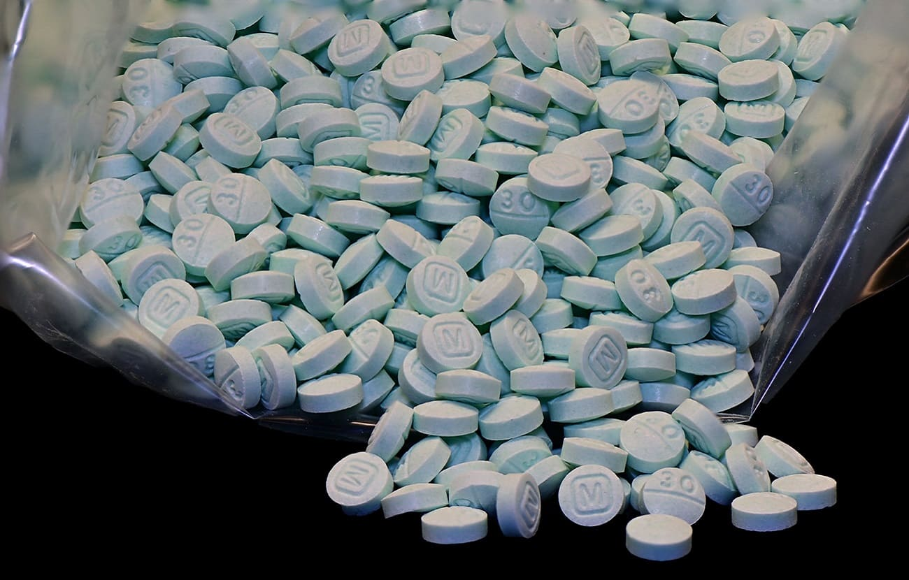

Fentanilo
Apunte sobre fentanilo, sus riesgos, efectos y medidas de seguridad para prevenir sobredosis.
1. ¿Qué es el fentanilo y para qué se usa?
Es un opioide sintético, 50-100 veces más potente que la morfina, usado para tratar dolor severo.
2. ¿Por qué se ha vuelto tan peligroso?
Es ilegal y a menudo se mezcla con otras drogas sin que la persona lo sepa, causando sobredosis accidentales.
3. ¿Cómo actúa en el cerebro?
Se une a los receptores opioides, causando euforia y ralentizando funciones vitales como la respiración.
4. ¿Cuáles son las señales de una sobredosis?
Respiración lenta o nula, piel azulada, pupilas diminutas y pérdida de la consciencia.
5. ¿Existe un antídoto?
Sí, se llama naloxona. Revierte los efectos de la sobredosis si se administra a tiempo.
6. ¿Qué es el fentanilo arcoíris?
Fentanilo de colores que imita dulces o crayones para atraer a jóvenes, pero igual de mortal.
7. ¿Qué es una pastilla "falsa"?
Píldoras que parecen medicamentos legítimos pero que en realidad contienen fentanilo.
8. ¿Por qué es tan adictivo?
Su alta potencia genera una dependencia física y psicológica muy rápida.
9. ¿Es lo mismo que el tramadol o la oxicodona?
No. Son opioides menos potentes. El riesgo es que las pastillas falsas de estas drogas contienen fentanilo.
10. ¿Qué hacer si alguien está en peligro?
Llama de inmediato al 911 (o emergencias) y, si es posible, administra naloxona.
